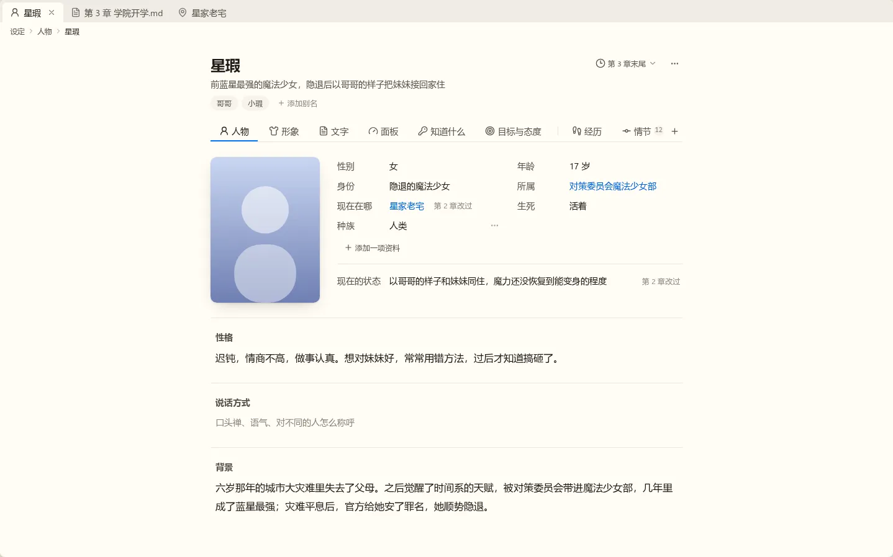
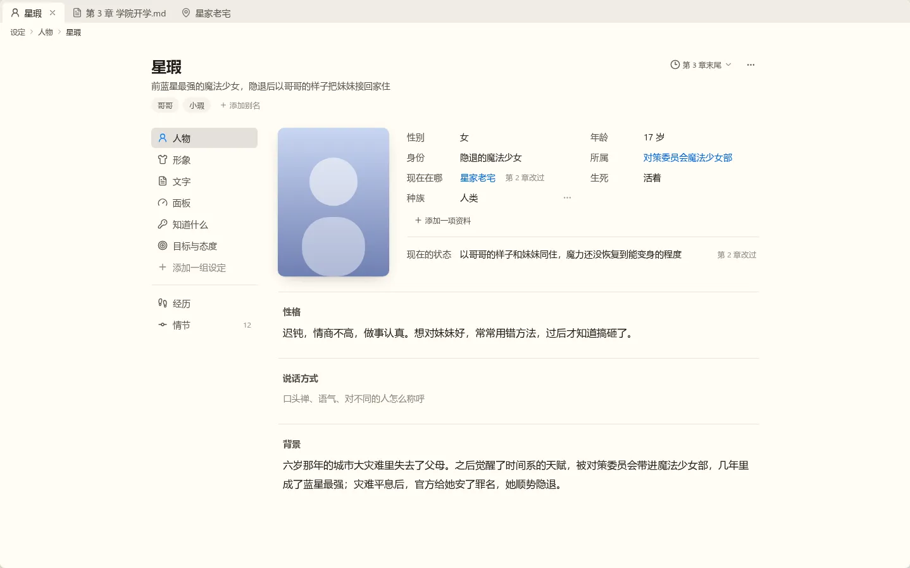
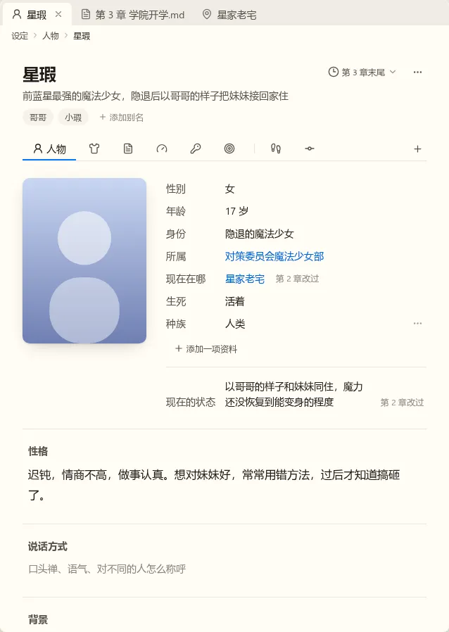
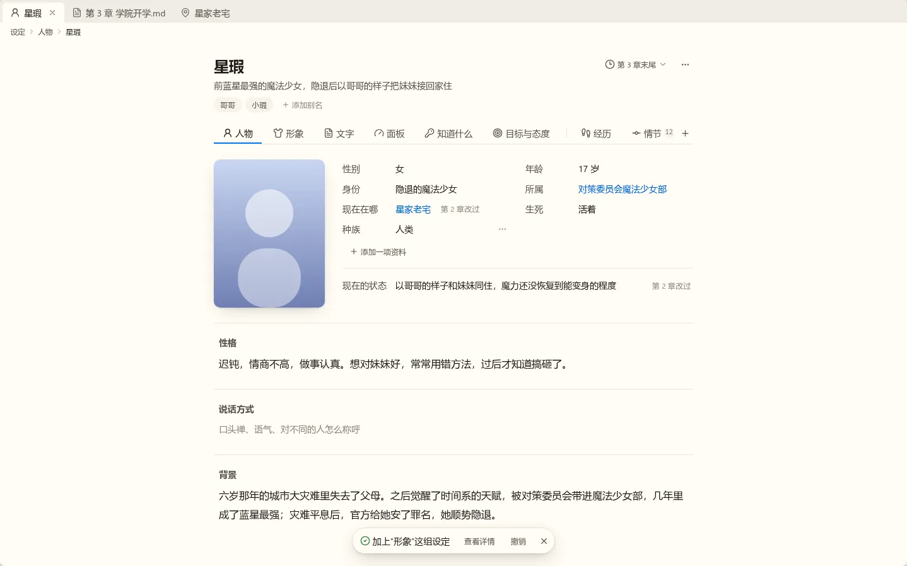
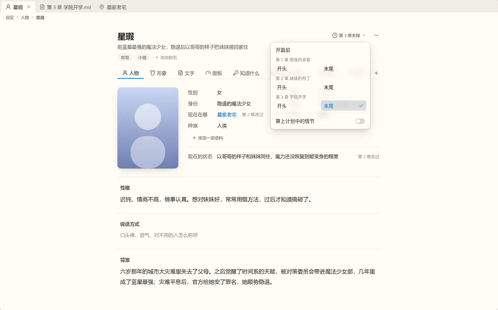
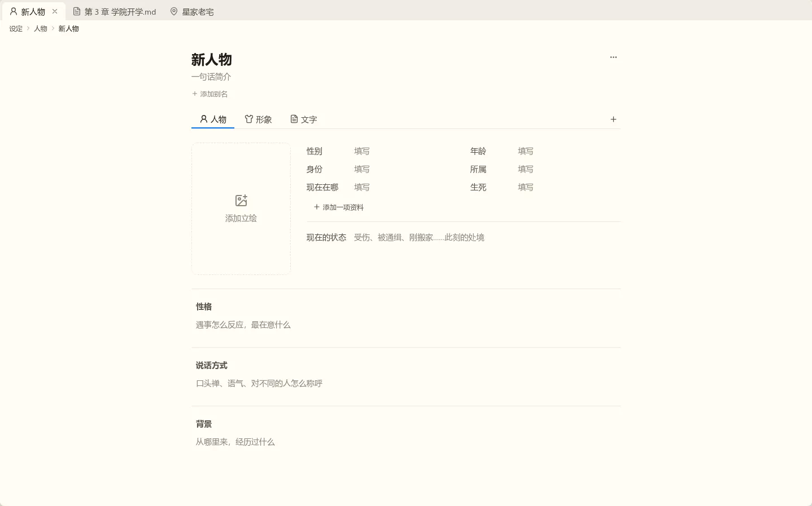
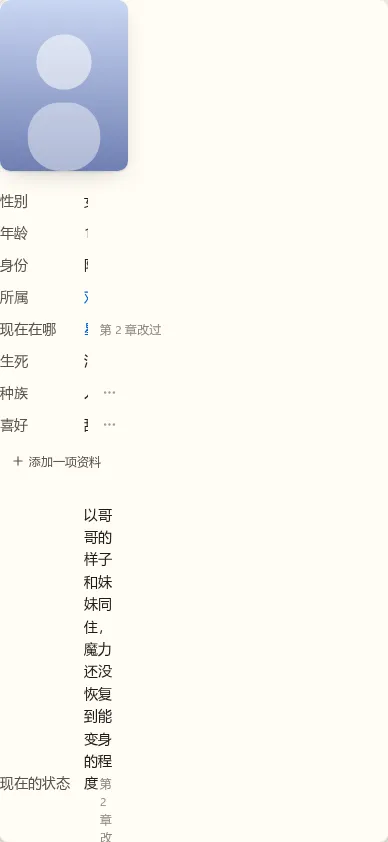
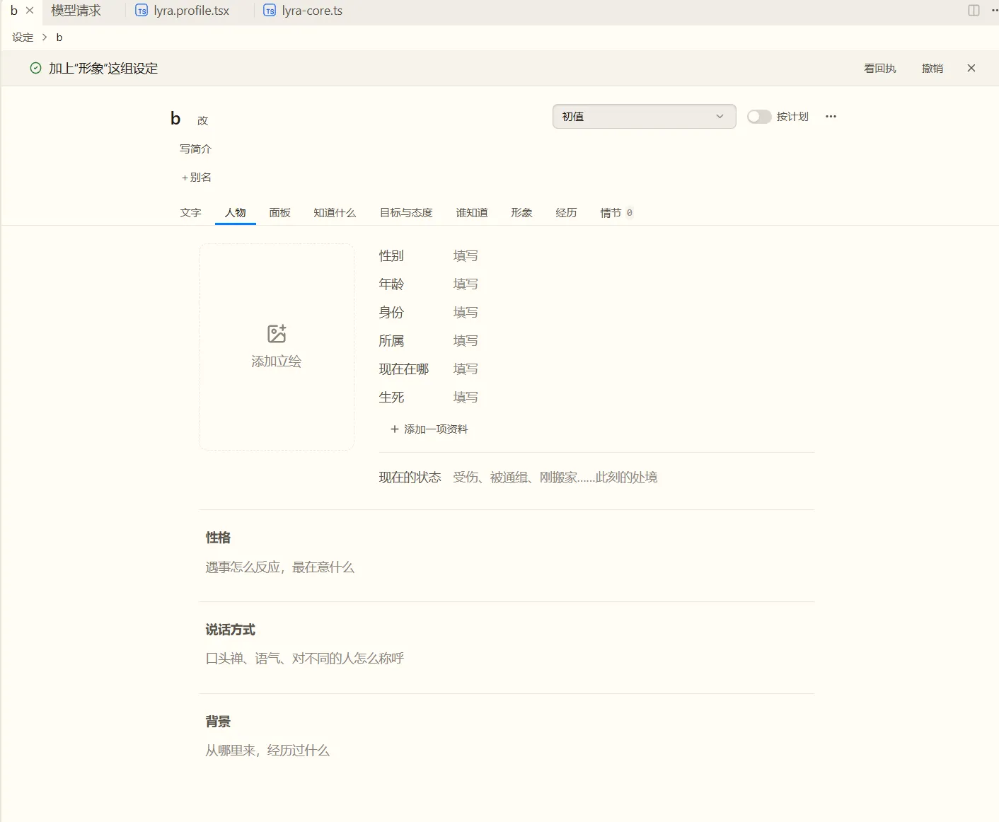

第 1 轮：条目页的页头、分页与保存提示
分页横排还是竖排？
推荐 A：编辑区窄的时候（一边写章节一边看人物，约 500 到 900 像素）两种排法都只能横排，A 在宽窄下是同一个样子；工作台左边已经有侧栏，页面里不再套一条。
A 横排，设定组与文字在前、经历与情节在后


放不下时选中的留名字、其余只剩图标（悬停给全名），再不够收进“更多”。
B 宽时在内容左边竖排，窄了换回横排


宽时名字都看得全；编辑区不到约 960 像素就换回横排。
保存后的提示要不要自己收起？
推荐 A：撤销在改动记录里随时能做，提示浮在下方留久了只是挡住最后几行。
A 6 秒后自己收起，指着或焦点在里面时不收

连着保存时原地换字、重新计时；Agent 改了设定的那条不自己收。
B 留到关掉或有新的一条
和现在一样一直在，只是浮在下方、不推开页面。
“初值”改叫什么？
推荐 A：说的是一个时间点，和“第 3 章末尾”并排读得通，不用解释。

A 故事开始前 来历里写“故事开始前 设为 17 岁”；改的时候写“改故事开始前的值”
B 开篇前
C 初始设定
D 不改，仍叫初值
直接修，不用答
| 哪里 | 改成什么 |
|---|---|
| 保存后的提示 | 浮在页面下方、盖在内容上，从下面滑上来，不推开任何东西；Agent 改了设定的提示同样浮着、叠在它上面。“看回执”改叫“查看详情”；提示里的“撤销”和确认框、回执页、改动记录里的“还原”统一叫“撤销” |
| 页面里别的插行 | 同样不推开内容：页头写入失败的原因写在那个浮层里；“在某位置还没出场”变成时间点旁的一枚标记；“原来选的那一章已经不在了”走下方的提示 |
| 名字、简介 | 去掉“改”，点文字本身在原处出浮层改（和人物分页的短项同一种，现在是页顶的确认条）；指着时浅底加铅笔，不挪字；没有简介时写“一句话简介” |
| 别名 | “＋别名”改叫“添加别名”；打了字点别处就加上（现在点别处会丢掉） |
| 时间点与“按计划” | 合成一个“第 3 章末尾”按钮；空作品没有章时整个不出；作品里没有计划时，展开里不出“算上计划中的情节”；算上计划时按钮旁多一枚“算上计划 ×”，点 × 回到实际 |
| 分页 | 每页带图标和名字，设定组与文字在前、经历与情节在后，中间一条分隔；情节没有条数时不写 0；空作品还没有剧情时经历、情节不出 |
| 添加一组设定  | 从“···”挪到分页条末尾的“＋”，点开直接列出能加的组（适用于这个种类的在前），点一项就加上并切过去；没有能加的时不出“＋” |
| 去掉这组设定 | 留在“···”里，和“删除条目”之间加分隔；在分页上右键也有；确认时写“填的内容会保留，可以再加回来” |
| 加立绘 | 人物页的“添加立绘”一次到位：没有形象就加上、切到形象页并打开选图（现在要点三次） |
| 回车保存 | 短项填完立刻回车也能保存（现在落在 300 毫秒的预览等待里会被吞掉） |
| 图标 | 设定组、附加分页、条目种类三处登记加图标；编辑器的页面标签显示图标（现在一律不画）；条目页按种类：人物、组织、地点、物品、知识点各一个，其余是书 |
| 内容列 | 页头与内容左边对齐；内容净宽 760（现在扣掉内边距只有 696，人物分页的短资料两列永远排不开） |
| 人物分页在 390 宽  | 值那一列被挤成一个字宽（t41 的缺陷）：窄了立绘在上、短资料一行一项 |
现状

已定
- 每组设定各一个分页（t41 第 1 轮）
- “添加一项资料”与“添加一组设定”分成两个入口（t41 第 1 轮）
- 改一项时就地展开，不用页顶的确认条（t41 第 1 轮）